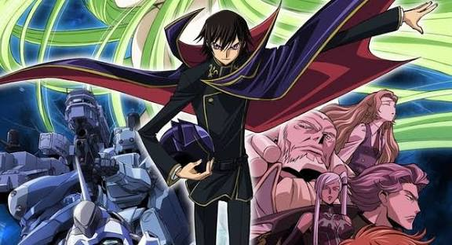
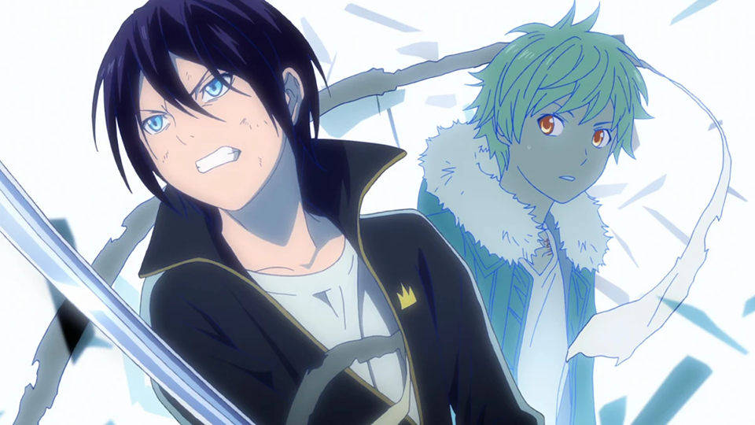
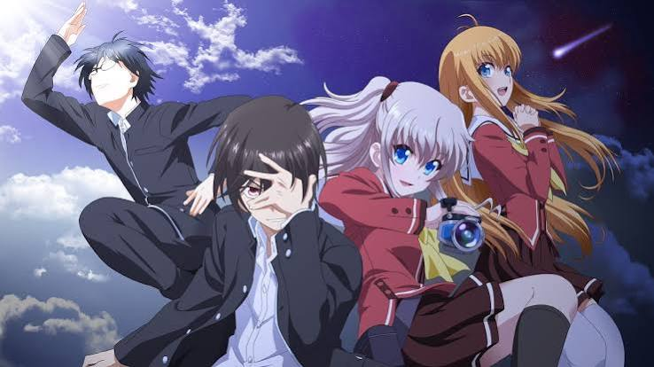
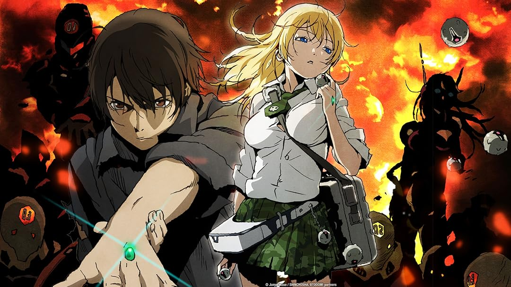
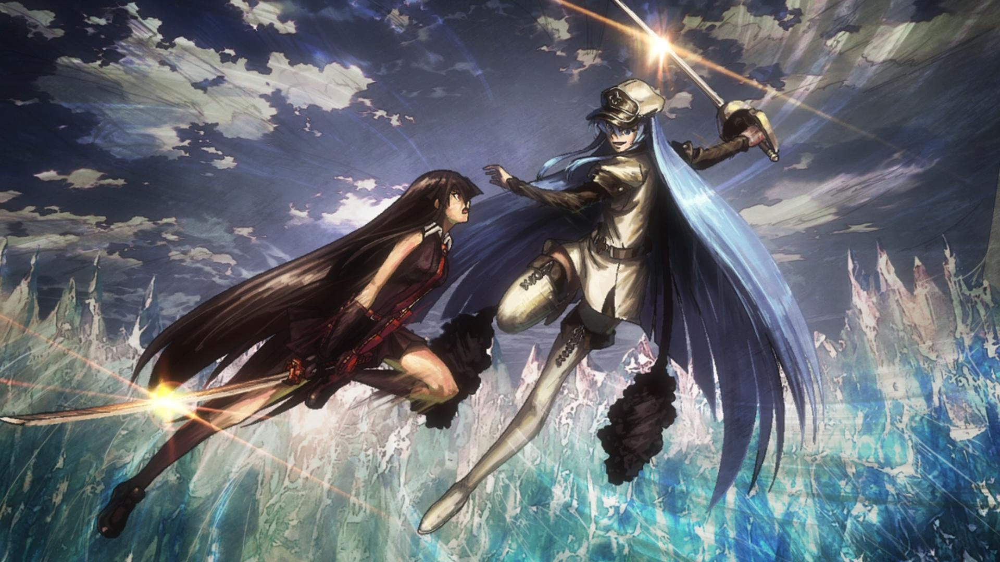
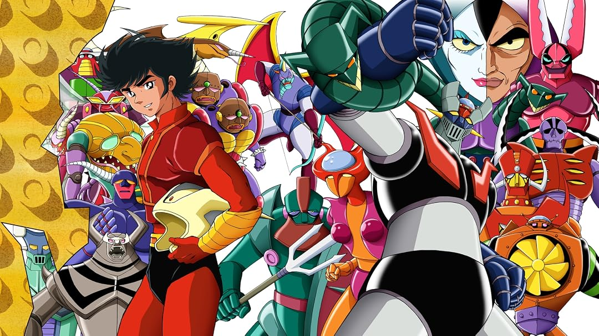

En la industria del anime, el éxito comercial no siempre va de la mano con la calidad artística. Cada temporada, un puñado de producciones acapara los algoritmos, los memes y las conversaciones en redes sociales, creando una enorme sombra que oculta a verdaderas obras maestras.Detrás de los grandes nombres de siempre, existe un catálogo silencioso de series con conceptos revolucionarios, animaciones impecables y narrativas profundas que, por mala fortuna o falta de presupuesto en marketing, pasaron completamente desapercibidas. En este artículo, desempolvamos el archivo de la animación japonesa para rescatar esos animes con un potencial enorme que merecen un lugar sagrado en tu lista de pendientes. Si estás cansado de ver siempre lo mismo y buscas historias que rompan el molde, has llegado al lugar correcto.
¿Qué harías si te dieran el poder de controlar la mente de cualquier persona con una sola mirada, pero el precio para liberar a tu país fuera convertirte en el terrorista más buscado del mundo? Puedes decubrirlo en Code Geass
El olvido no siempre es un castigo a la mediocridad; a veces, es el precio de la autosuficiencia. Cuando un anime es redondo, cierra sus tramas con maestría y logra conectar de forma perfecta con el espectador, paradójicamente cava su propia tumba en la memoria colectiva. Al entregar una obra completa y satisfactoria, la serie apaga el incendio de la especulación: no deja teorías sin resolver, no genera debates infinitos en redes sociales y no necesita de polémicas para sostenerse. En una era de consumo hiperactivo impulsada por algoritmos que exigen dopamina constante, la conversación digital prefiere el caos de un anime incompleto o imperfecto antes que el silencio respetuoso que deja una obra maestra terminada. Así, mientras los shows sobrevalorados sobreviven a base de memes y discusiones, aquellas historias que nos tocaron el alma se retiran en silencio, convirtiéndose en tesoros íntimos que todos los que los vieron guardan con celo, pero que nadie vuelve a nombrar públicamente
Imagina que eres un estudiante ridículamente genio, pero vives escondido en un Japón colonizado, humillado y rebautizado como el "Área 11" por el imperio más despiadado del planeta: Britannia. Tu propia familia te traicionó, asesinaron a tu madre, dejaron inválida a tu hermana y tú juraste venganza. Pero eres solo un adolescente contra el ejército más poderoso del mundo. Estás acabado antes de empezar.Hasta que, en medio de un tiroteo, una mujer misteriosa te hereda un poder divino y aterrador: el Geass. Con solo mirar a alguien a los ojos, puedes darle una orden absoluta. No es persuasión; es control mental total. Si les ordenas que se disparen en la cabeza, lo harán sonriendo. Si les ordenas que traicionen a su patria, lo harán sin dudar.¿Qué hace nuestro protagonista, Lelouch? No se vuelve un superhéroe. Se pone una máscara, adopta el nombre de "Zero" y desata una guerra mundial.Esto no es un anime de robots comunes; es un juego de ajedrez maquiavélico y sangriento a escala global. Lelouch es el antihéroe definitivo: un estratega implacable que usa a ejércitos enteros como peones, manipula la política, miente a sus amigos y sacrifica vidas humanas sin parpadear si eso lo acerca un paso más a destruir el imperio. Es ver a un genio de la manipulación psicológica jugar a ser Dios mientras el mundo se cae a pedazos a su alrededor.¿Por qué te va a volar la cabeza?Porque es adictivo. Es un thriller psicológico salvaje lleno de traiciones brutales, giros de guion que te dejarán con la boca abierta al final de cada maldito episodio y una tensión que no te dejará respirar. Y por si fuera poco, tiene el final más legendario, épico y perfecto que se ha escrito jamás en la historia de la animación. Una vez que entras al juego de Lelouch, no hay marcha atrás.
Disfruta de este anime y más en Crunchyroll